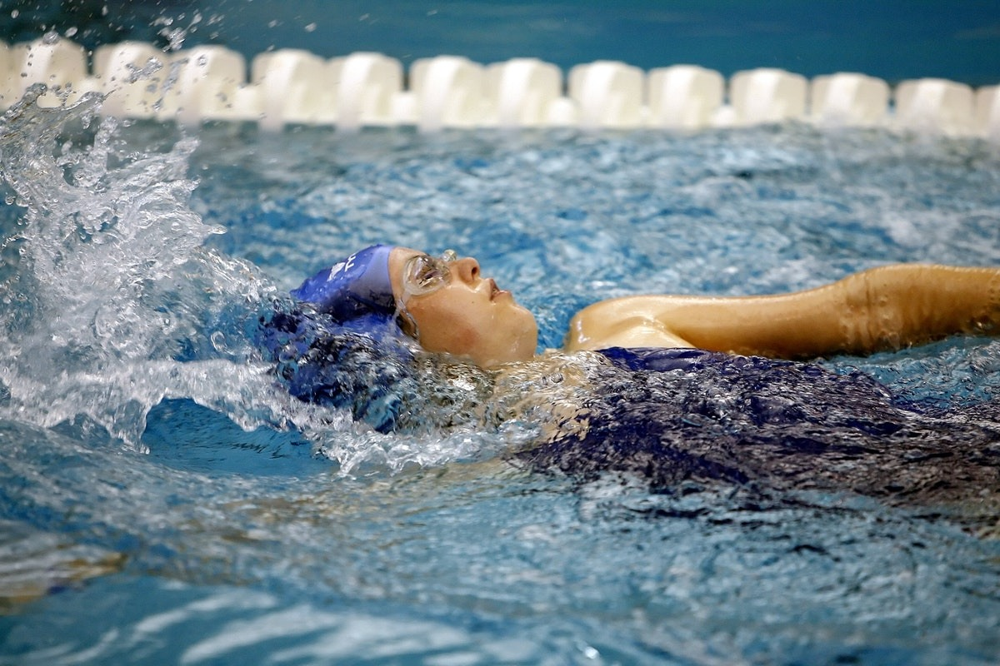

Здоровый образ жизни не возможен без движения. Сразу оговоримся, что под спортом мы подразумеваем не тяжелые физические тренировки для достижения спортивных результатов. Это скорее физические упражнения для того, чтобы тело было подтянутым, чувствовали Вы себя в отличной форме и смогли предотвратить старение. Если Вы из всего комплекса мер ЗОЖ выберете только правильное питание, это даст результат, но он не будет столь очевиден. Для здоровья и красоты необходимы ежедневные спортивные упражнения. Вы можете два раза в неделю нагрузить себя больше, а для остальных дней выбрать комплекс не тяжелых упражнений. Для начала определитесь с основным видом спорта. Выбирайте только любимый! Если вы до потери сознания будете заниматься на беговой дорожке, не испытывая при этом никакого удовольствия, результатов это не принесет. Перед тренировкой обязательно поешьте, чтобы не накидываться на еду сразу после занятий. Но пища должна быть очень легкой: что-нибудь овощное или фрукты. Польза от занятий спортом очевидная: подтягиваются мышцы, кожа лучше снабжается кровью, что придает молодости, можно сжечь лишние калории и, соответственно, похудеть. И так, выбираем спортивные занятия по душе. Плавание: для женщины идеально подойдет плаванье. Работают все мышцы, а сильной усталости не чувствуется. Мышцы подтягиваются, кожа увлажняется. Плавание хорошо еще тем, что даже самый неуклюжий человек в воде приобретает легкость. Ну а то, что приходится надевать купальник (почти раздеться!) может послужить дополнительным стимулом, чтобы сбросить лишние килограммы. При средних нагрузках сжигается в час до 700ккал.
подходит для офисных работников, целый день проводящих за компьютером. Если Вы ни дня не представляете себе без общения, туризм для Вас! Пересеченная местность, невысокие горы, походы в горы – идеальный вариант для подтягивания мышц бедер и живота. Красивая местность, великолепный воздух. Можно сделать хорошие снимки. Туристы любители в среднем преодолевают 30км в день. А потом песни под гитару. Возможно, сон на свежем воздухе. Можно брать с собой подросших детей. Сжигается до 400 килокалорий в час. Недостаток: невозможность пеших прогулок зимой, трудно выделить время (это ведь не два часа в неделю!).
Прыжки на скакалке: самое простое и действенное средство сохранить форму. Прыжки даже могут заменить гимнастику! Не смотря на кажущуюся одинаковость движений, работают почти все мышцы, осанка улучшается. Подтягиваются ягодицы, укрепляются бедра, мышцы рук напрягаются. Улучшается кровоснабжение, ускоряется сердечный ритм. Подходит абсолютно для всех, но не начинайте с больших нагрузок, это может отрицательно сказаться на сердце, с осторожностью надо отнестись к занятиям с болезнями сосудов ног. Сжигается до 1000 ккалорий в час, но здесь зависит сильно от нагрузок. Несомненное достоинство – доступность. Но не все станут выходить на улицу, чтобы попрыгать, а прыгать на девятом этаже многоэтажки с избыточным весом проблематично.
занятие спортом очень полезно для своего здоровья